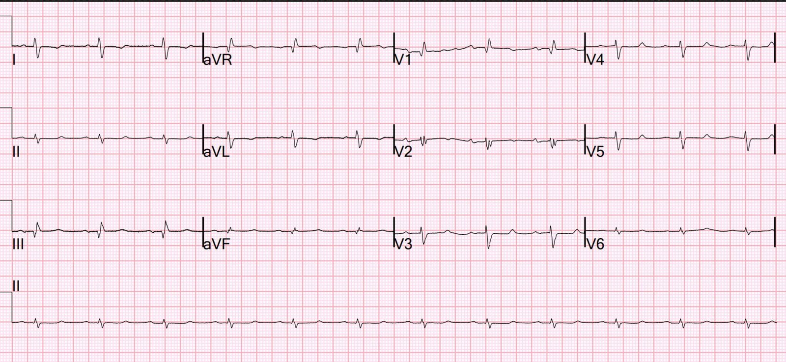
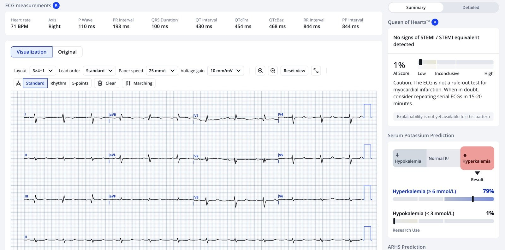
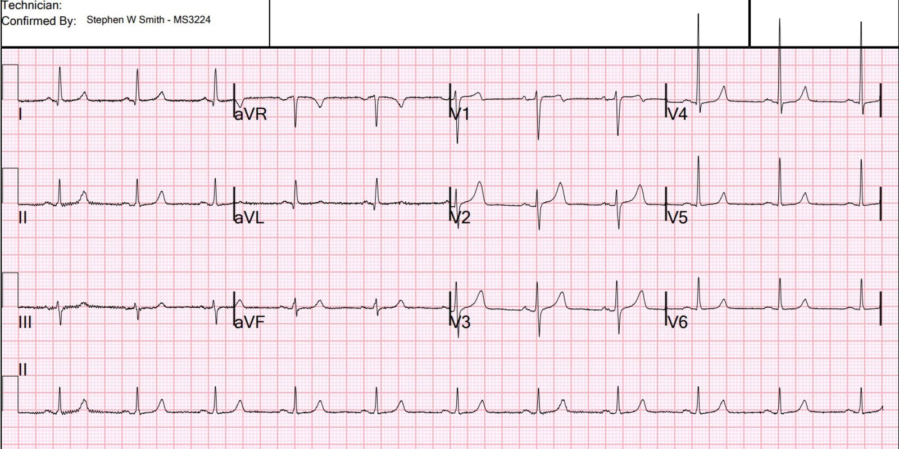
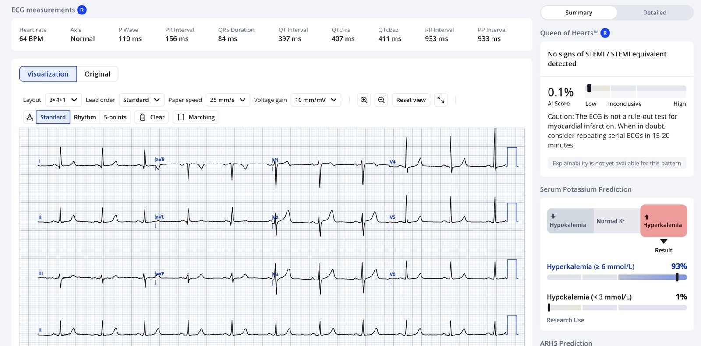
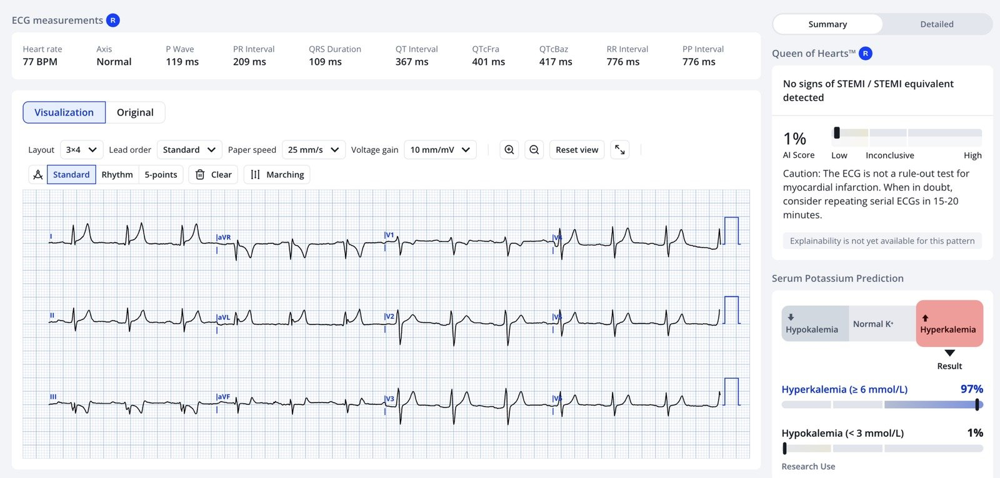
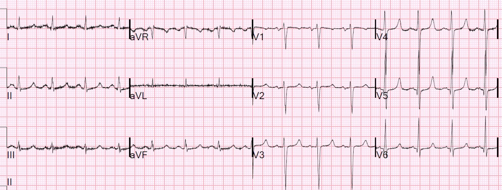
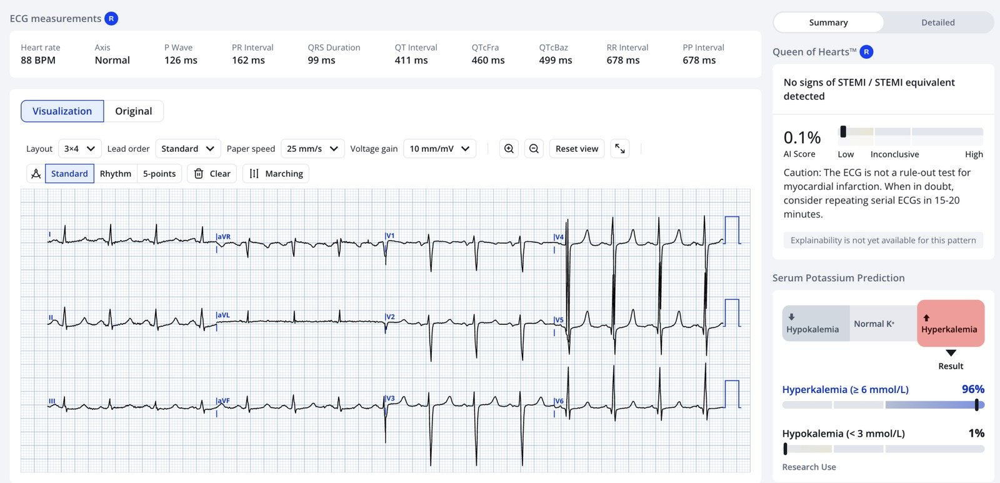
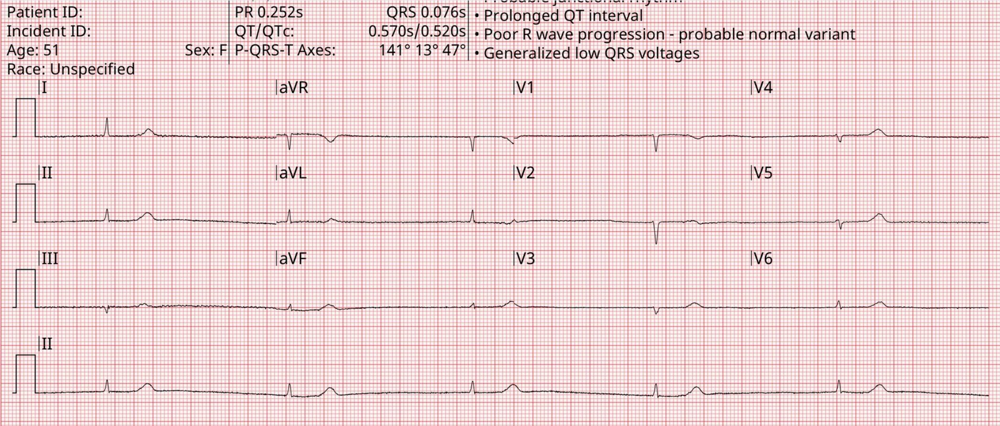
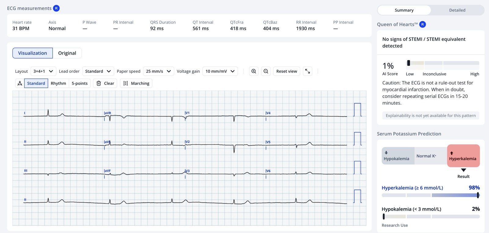
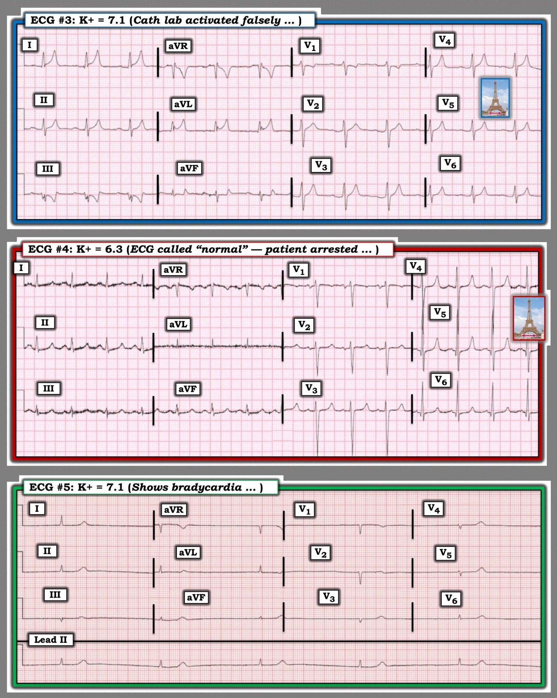

21/12/2025 — Tất cả các điện tâm đồ này biểu hiện bệnh lý gì?
Bản dịch tiếng Việt của bài "What pathology do all these ECGs manifest?" – Dr. Smith’s ECG Blog. Giữ nguyên toàn bộ 11 hình ảnh và 1 video của bản gốc.
Điện tâm đồ 1:


Bạn nghĩ gì? Sau đó bạn có thể xem phần còn lại.
Điện tâm đồ 1: Đây là tăng kali máu (hyperkalemia). Ngay khi nhìn thấy, tôi đã biết. Sóng T nhọn (peaked T waves) của tăng kali máu không phải lúc nào cũng cao và nhọn. Đôi khi chúng chỉ là những hình tam giác nhỏ, như trong ca này. Sóng T như thế này không gặp trong bất kỳ tình trạng nào khác. Với tôi, chúng gần như là đặc hiệu (pathognomonic). Kết quả xét nghiệm: K = 6.3; calci ion hóa = 4.0 (hơi thấp, giải thích đoạn ST dài — điển hình ở bệnh nhân lọc máu)
Điểm cộng: Ngoài ra còn có trục lệch phải và sóng R lớn (R/S > 1) ở V1, vì vậy đây cũng là phì đại thất phải (RVH).
Hãy xem Mô hình AI của PMCardia (“Karl”) thể hiện thế nào trên điện tâm đồ 1:


Điện tâm đồ 2:


Điện tâm đồ 2: Smith nhận ra tăng kali máu ngay lập tức. Đã cho xét nghiệm khẩn. K = 6.2
Mô hình AI trên điện tâm đồ 2:


Điện tâm đồ 3:

Điện tâm đồ 3: tăng kali máu 7.1. Giả OMI (Pseudo-OMI). Kích hoạt phòng thông tim (cath lab) nhầm.
Mô hình AI đọc điện tâm đồ trên điện tâm đồ 3:


Điện tâm đồ 4:


Điện tâm đồ 4: K = 6.3. Được đọc là “bình thường”. Bệnh nhân ngừng tim.
Mô hình AI trên điện tâm đồ 4:


Điện tâm đồ 5:


Điện tâm đồ 5: K = 7.1. Ca này dễ vì có nhịp chậm. Nhưng hãy xem sóng T vẫn nhỏ đến mức nào.
AI trên điện tâm đồ 5:


Điện tâm đồ 6 (bên dưới): K = 6.8. Xem toàn bộ ca này tại bài viết này, cùng nhiều ca tăng kali máu hấp dẫn khác!!
Điểm cần học:
Sóng T của tăng kali máu không nhất thiết cao và nhọn; chúng có thể rất thấp và nhọn, giống một hình tam giác nhỏ. Tôi đã học được cách nhận ra chúng ngay lập tức và chính xác.
= = =
======================================
BÌNH LUẬN CỦA TÔI, bởi KEN GRAUER, MD (21/12/2025):
Chẩn đoán tăng kali máu rất dễ — khi QRS rộng kèm sóng T cao, nhọn trên điện tâm đồ và bối cảnh lâm sàng rõ ràng (tức là suy thận, nhiễm toan, dùng các thuốc gây giữ K+). Chẩn đoán khó nắm bắt hơn nhiều khi QRS không rộng và sóng T không cao, nhọn.
- Thực tế là việc không nhận ra và điều trị kịp thời tăng kali máu nặng là một thiếu sót có thể gây tử vong. Thế nhưng các “bộ mặt điện tâm đồ” đa dạng của tăng kali máu khiến việc nhận ra những biểu hiện kín đáo hơn của nó luôn là một thách thức.
= = =
Những “bộ mặt điện tâm đồ” kín đáo của tăng kali máu:
- Trái với giáo điều từng được giảng dạy (tức là Rằng có một “trình tự” cố định các thay đổi điện tâm đồ xuất hiện khi mức độ tăng kali máu tăng dần) — nhiều bệnh nhân “không đọc sách giáo khoa”. Vì vậy, thực tế lâm sàng là bất kỳ tổ hợp thay đổi điện tâm đồ nào cũng có thể gặp ở hầu như bất kỳ mức K+ huyết thanh tăng nào. Ở mức cực đoan — điều này bao gồm cả khả năng ngừng tim là biểu hiện đầu tiên của tăng kali máu (không có QRS giãn rộng, giảm biên độ sóng P; các loạn nhịp chậm và blốc AV khác nhau — và thậm chí không hề có sóng T nhọn! — Xem Bình luận của tôi trong bài ngày 22 tháng Tám năm 2025 ).
- Trong số các ca kiểu hình sao chép Brugada (Brugada Phenocopy) đã đăng trên Dr. Smith’s ECG Blog (trong đó hình ảnh điện tâm đồ Brugada típ 1 bị khởi phát bởi một tình trạng nền nào đó) — tăng kali máu là nguyên nhân thường gặp nhất. Cũng như các nguyên nhân khác của kiểu hình sao chép Brugada — dấu hiệu điện tâm đồ này thường biến mất nhanh chóng khi tăng kali máu được điều trị (Xem Bình luận của tôi trong bài ngày 5 tháng Năm năm 2022 — và bài ngày 13 tháng Một năm 2025). Do đó — tôi luôn cân nhắc khả năng tăng kali máu mỗi khi thấy một hình ảnh điện tâm đồ Brugada típ 1 bất ngờ có kèm QRS giãn rộng.
- Đánh giá nhịp có thể đặc biệt khó khăn khi tăng kali máu vì: i) QRS có thể giãn rộng, thường với hình dạng QRS bất thường gợi ý nhịp thất; — ii) Biên độ sóng P có thể giảm (và sóng P thậm chí có thể biến mất = nhịp xoang-thất (sinoventricular rhythm)); — iii) Loạn nhịp chậm thường gặp — thường kèm blốc AV độ 1 và/hoặc các dạng blốc AV khác thường “không tuân theo các quy tắc thông thường” của việc đọc nhịp; — và, iv) Cuối cùng VT có thể xuất hiện, nhưng — Nhịp rộng đều không có sóng P có phải là VT không? — hay có lẽ là nhịp xoang hoặc nhịp bộ nối với sóng P mất đi do tăng kali máu? (Xem Bình luận của tôi trong bài ngày 16 tháng Một năm 2022).
- Tình trạng tăng kali máu đáng kể nổi tiếng là hay che lấp các dấu hiệu thiếu máu cục bộ/nhồi máu trên điện tâm đồ (Xem Bình luận của tôi trong bài ngày 5 tháng Chín năm 2022). Đó là vì điện tâm đồ cho chúng ta thấy tác động tổng hợp của tăng kali máu và bất kỳ (các) tình trạng khác nào đang cùng tác động. Ví dụ — NẾU sóng T nhọn do tăng kali máu — Điều gì sẽ xảy ra với sóng T nhọn đó nếu thiếu máu cục bộ cấp trên điện tâm đồ nền đang gây ST chênh xuống/sóng T đảo ngược?
- Và rồi có những bệnh nhân đến viện với QRS giãn rộng rõ rệt và mức K+ huyết thanh tăng có thể gây tử vong — nhưng lại tỉnh táo đến bất ngờ với dấu hiệu sinh tồn bình thường dù thời gian QRS gần bằng 1 ô lớn (Xem Bình luận của tôi trong bài ngày 14 tháng Bảy năm 2025).
= = =
Tăng kali máu với sóng T nhỏ:
Bên cạnh những “bộ mặt” điện tâm đồ kín đáo kể trên của tăng kali máu, còn có “chủ đề” của phần bàn luận hôm nay của Dr. Smith — mà về bản chất là sóng T của tăng kali máu đôi khi nhỏ đến bất ngờ.
- Điểm MẤU CHỐT: Nếu bạn thấy nhiều sóng T nhọn đối xứng (dù nhỏ) — hãy cân nhắc tăng kali máu (đặc biệt nếu bối cảnh lâm sàng có thể phù hợp với tăng kali máu).
= = =
Để rõ ràng, trong Hình 1 — tôi đã đưa lại 3 bản ghi trong phần bàn luận của Dr. Smith mà tôi sẽ bình luận ngắn gọn:
= = =
Hình 1: Các điện tâm đồ #3,4,5 trong phần bàn luận của Dr. Smith ở trên.
- Điện tâm đồ #3: Sóng T nhọn trong bản ghi này đã đánh lừa các nhân viên y tế, khiến họ nghĩ đây là sóng T tối cấp (hyperacute T waves) của một OMI cấp. Các manh mối gợi ý tăng kali máu gồm: i) Tính lan tỏa của sóng T nhọn này (ở không dưới 8/12 chuyển đạo); — ii) Hình dạng các sóng T này (rất nhọn ở đỉnh); — và, iii) Ý thức được rằng sóng T của tăng kali máu không phải lúc nào cũng dương — mà sóng T nhọn có thể âm (như ở chuyển đạo III tại đây ).
- Điện tâm đồ #4: Sóng T ở chuyển đạo V3,V4 biểu hiện hiệu ứng sóng T “tháp Eiffel” điển hình của tăng kali máu ( = sóng T hình dạng đối xứng, nhọn ở đỉnh, với đáy sóng T hẹp). Dù sóng T tương đối nhỏ ở các chuyển đạo khác — những hình tam giác nhỏ, đối xứng mà Dr. Smith mô tả hiện diện rõ ràng ở hầu hết các chuyển đạo khác.
- Điện tâm đồ #5: QRS nhỏ và hẹp — và không thấy sóng T cao, nhọn. Nhưng: i) Tần số rất chậm; — ii) Không có sóng P (? nhịp xoang-thất?); — và, iii) Dù nhỏ và không đặc biệt nhọn — sóng T cao không tương xứng so với QRS rất nhỏ — và các sóng T này thực sự tạo thành những hình tam giác đối xứng. Chúng ta cần tập cho mình thói quen cân nhắc tăng kali máu với kiểu bản ghi này.


= = =
= = =